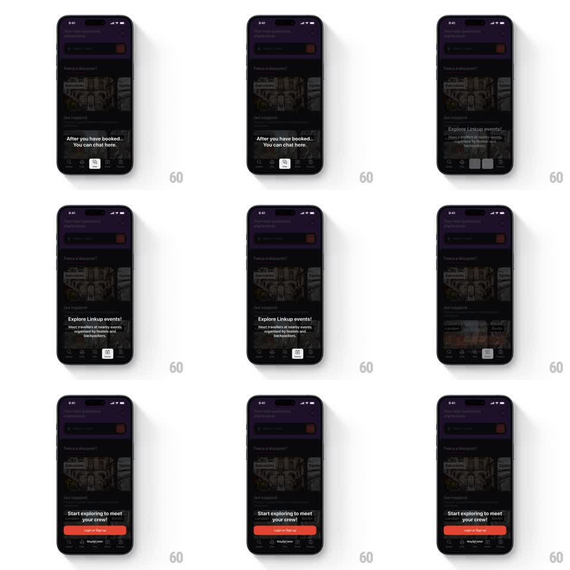

Media
Frame-by-frame

Rebuild this interaction 1:1: Hostelworld's bottom-tab coachmark tour - a stepped sequence where a tooltip springs from tab to tab, spotlighting chat, then events, then the login call-to-action.

Rebuild this interaction 1:1: Hostelworld's bottom-tab coachmark tour - a stepped sequence where a tooltip springs from tab to tab, spotlighting chat, then events, then the login call-to-action. ## Integration Integration: stack-agnostic spec - springs given as stiffness/damping, timed motions as duration + curve; map every value to your framework and animation library of choice. ## Scene Hostelworld home, dark: dimmed content behind an overlay, the bottom tab bar live. Step 1: tooltip "After you have booked... You can chat here." pointing at the chat tab (highlighted in a white pill). Step 2: "Explore Linkup events! Meet travellers at nearby events organised by hostels and backpackers." at the events tab. Step 3: "Start exploring to meet your crew!" with a red "Login or Sign Up" button and "Maybe later" below. ## Motion spec Pattern: stepped coachmark tour with springy tooltip transitions. - The overlay dims to 70% (250ms) and the first tooltip pops in anchored to the chat tab (scale 0.8 -> 1, spring ~420/15); the tab icon gets its white pill ring (scale from 0.6, 250ms) and a gentle pulse (1 -> 1.08 -> 1, 1.6s loop). - Advancing: the current tooltip shrinks toward its tab and fades (200ms) while the next tooltip springs out from the next tab (same spring, 100ms later) - the motion reads as the bubble hopping along the tab bar. - The highlight pill slides from the old tab to the new one (spring ~350/20, 300ms) rather than crossfading - one spotlight, traveling. - The final step swaps the tooltip for the CTA block: "Login or Sign Up" button scales in (spring ~400/16) with "Maybe later" fading under it (200ms). - "Maybe later" or completing the tour lifts the dim (250ms) and drops the tooltip toward its anchor (200ms). ## Calibration - Tooltips anchor with a real pointer triangle aimed at the active tab's icon. - Only the active tab icon keeps full color; the others sit at 50% through the tour. ## Reduced motion Tooltip and spotlight crossfade between steps (250ms); no springs. ## Don't miss - The tab bar itself never moves - the spotlight and tooltip do all the traveling. - The final CTA's red button is the tour's only brand-red element - it lands as the payoff.